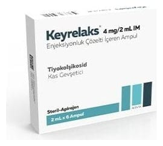

Keyrelaks 4 mg/2 ml IM Enjeksiyonluk Çözelti, 6 Ampul

Ne için kullanılır
KT · Bölüm 1KEYRELAKS, 2 ml’lik ampul formunda olup 4 mg tiyokolşikosid etkin maddesini içerir. Her bir kutuda 2 ml’lik 6 adet ampul bulunmaktadır.
KEYRELAKS esas olarak kas gevşetici etkinliğe sahiptir. KEYRELAKS, yetişkinlerde ve 16 yaştan itibaren ergenlerde ani ortaya çıkan omurilik kaynaklı ağrılı kas kasılmalarının ek tedavisinde kullanılır.